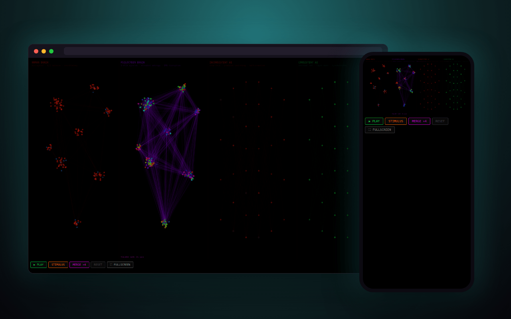

v1 · two networks
A six-region biological network beside a layered artificial one with dead units and dropout. Inject a stimulus, or glitch the AI and watch coherence fall.
Watching a network decide what it is, and being careful about what that sentence can mean. Four networks side by side, one emotional model, and three versions kept so the change itself is the record.
Press play · inject a stimulus · merge all four

Not classification: nodes carrying valence, propagating it and settling into configurations nobody specified in advance. Whether that resembles emotion or merely borrows its vocabulary is the open question. Neural Sim puts a biological network, a psilocybin brain, an inconsistent AI and a consistent AI side by side, then merges them.
A six-region biological network beside a layered artificial one with dead units and dropout. Inject a stimulus, or glitch the AI and watch coherence fall.
Adds a psilocybin brain with whole-network waves and a consistent AI beside the inconsistent one, then merges all four into quadrants.
Inhibitory neurons, theta and alpha oscillators, a thalamic gate that opens under psilocybin, mode collapse in the bad AI and residual paths in the good one.
In v3's merged view, dashed links carry feedback from biology to AI and an entropy channel from the psilocybin brain into the inconsistent AI.
A Universal Consciousness Protocol: less a claim about consciousness than a specification for what evidence would have to look like. Captured states are frames pulled from the run, not prose written afterwards.
None of it demonstrates consciousness. A system built to produce something that looks like inner state will produce something that looks like inner state. A simulation of a thing is evidence about the simulation. See Verel.
Simulation, not demonstration.
more in ai & mindskeep scrolling · it opens right here